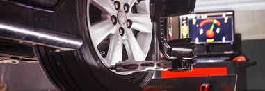
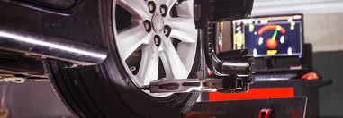

Tipo de auto : city car
Fecha de ingreso : 04/04/2023
Tiempo estimado de trabajo : 1 dia
Diagnóstico : Alineación y balanceo
Herramientas utilizadas
Juego de llaves
compresor
extractor de tren delantero
poleas
alzador de auto
Trabajo realizado
Se realiza el proceso de ajuste de la dirección, la suspensión y las llantas del vehículo, proceso realizado a tiempo, sin mayor novedades
Last updated 3 mins ago